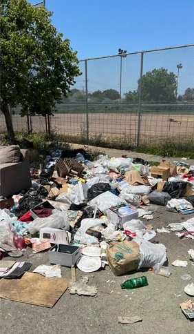
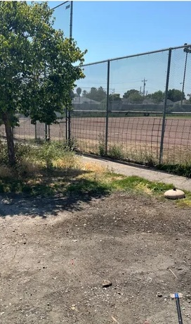
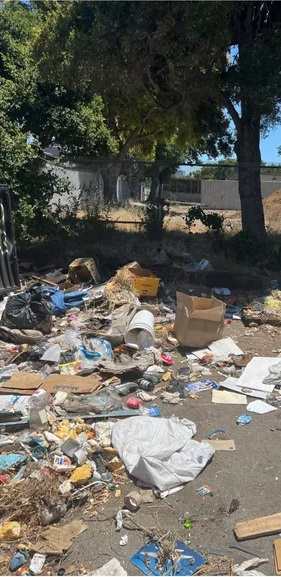

Before & After Transformations

BEFORE

AFTER
Restoration Project
A complete transformation of the polluted riverbank into a thriving ecosystem. Our team removed over 2 tons of plastic waste and introduced native plant species to restore natural habitats.

BEFORE

AFTER
Urban Green Space Initiative
Transforming an abandoned lot into a community garden that serves as both a recreational area and an educational space for local schools to learn about sustainable practices.

BEFORE

AFTER
River Clean-up Project
Rehabilitating damaged coastal areas through the removal of invasive species and planting of native vegetation to prevent erosion and provide critical habitats for marine life.